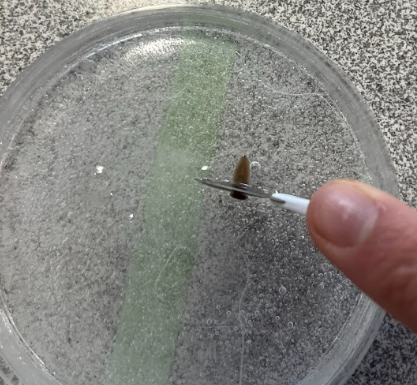
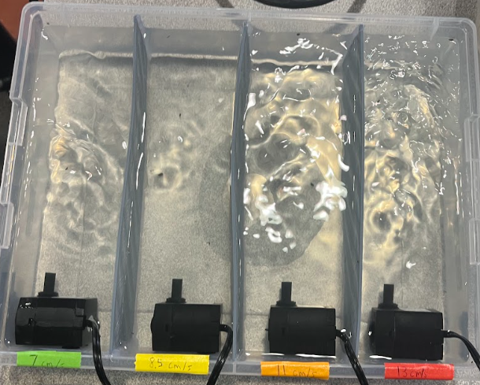
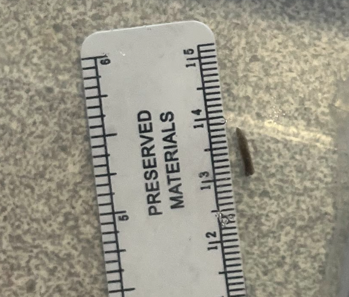
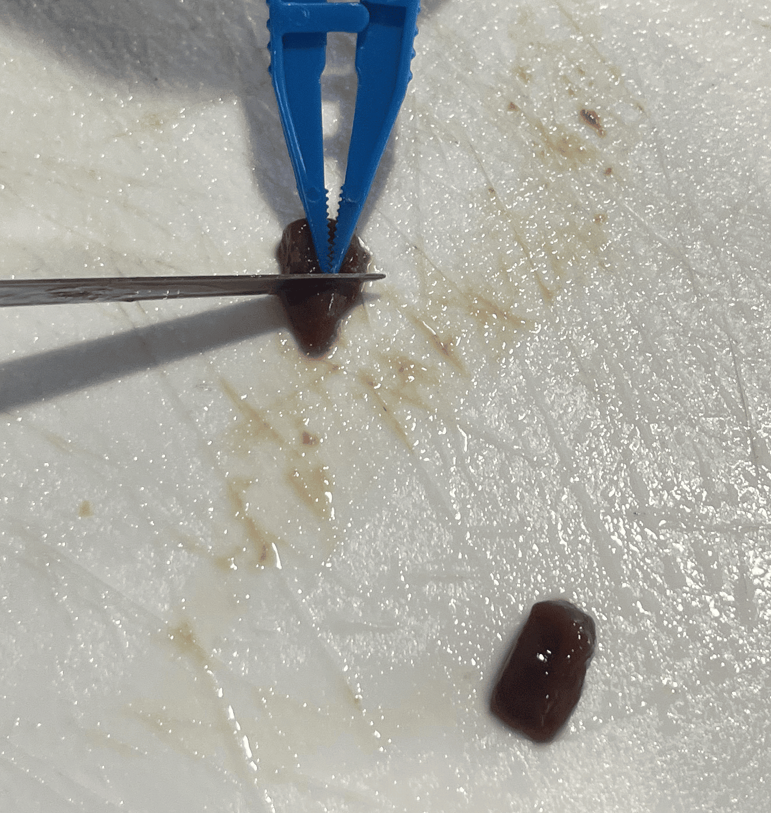
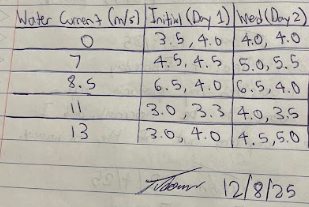

Experiment Procedure
Step |
Description |
Image |
|---|---|---|
1 |
Planaria are cut in half crosswise on an ice plate, put into their different water flow rate groups, and are measured. |
 |
2 |
Water pumps are turned on from 7:35 AM to 11:40 AM for the next 3 days, with 2 planaria in each water flow rate group. |
 |
3 |
Planaria are measured at the end of each pump cycle using a ruler in mm. |
 |
4 |
After the planaria are put through the water pumps for 3 days, they are put back into the main planaria tank. |
 |
5 |
The planaria in the main tank are fed with 0.25 mL of beef liver. |
 |
6 |
Data for the week is recorded in a notebook and the process is repeated the next week for the next trial. |
 |